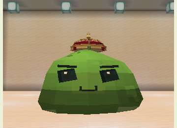
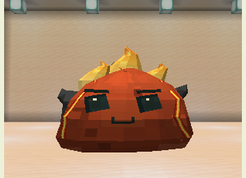
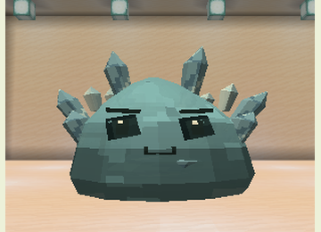
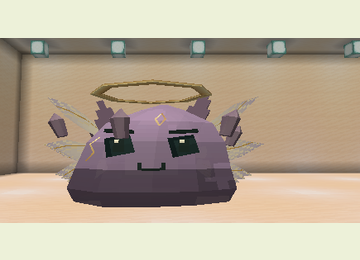

Bosses and Minions
Find one of the four natural arenas and use its ritual item on the central altar. Accepted rituals consume the item and reserve the altar until the boss dies. The arena needs 17×17 floor space and six clear blocks above.
Difficulty must be above Peaceful, with no liquids, sufficient space, and no other loaded living boss within 96 blocks. Ground warnings, body pulses, and sounds signal attacks.
Top and side pedestal clicks are accepted. If the player or their companions occupy the center, summoning looks for a free nearby arena position and never consumes the item on failure.
Gelatinous King

Health: 600 · Armor: 10 · Phases: 2 · Reward: 2 Royal Gel
Craft a Gelatinous Crown with a Slime Core, Breeding Gel, and four gold ingots. Use it at the Royal Court altar in the Overworld.
The King alternates jump impacts, summons, crosses, and rings. Hits apply Slowness I and launch targets. Phase two begins at half health and remains active even if healed.
| Minion | Role |
|---|---|
| Guard | Melee attacker; applies Weakness II |
| Healer | Restores 14 King health per pulse, requiring range and line of sight |
| Spitter | Ranged attacker; applies Slowness I and Poison I |
The King maintains up to six minions. Prioritize healers to limit recovery.
Magmatic Heart

Health: 750 · Armor: 12 · Phases: 2 · Reward: 2 Igneous Fragments
Craft a Magma Brazier with a Slime Core, Elemental Essence, two magma creams, and two blaze powders. Use the Elemental Sanctuary altar.
Attacks include rings, eruptions, crosses, and twin eruptions. Hits ignite and apply Hunger II. Phase two begins at half health; water reduces damage. Up to four fire or magma servants provide ranged embers and pursuing bombs. Bomb explosions apply Blindness I and Hunger II without destroying terrain.
Crystalline Colossus

Health: 900 · Armor: 16 · Phases: 2 · Reward: 2 Prismatic Shards
Craft a Crystal Sigil with a Slime Core, two Crystal Fragments, two amethyst shards, and a diamond. Use the Crystal Cavern altar.
Shard barrages, waves, crosses, and rings apply Slowness III and Mining Fatigue II. Phase two starts at half health. Defense increases while preparing an attack; exploit recovery windows.
Primordial Slime

Health: 1,024 · Armor: 14 · Phases: 3 · Reward: 2 Primordial Essences
Craft a Primordial Seal with Royal Gel, Igneous Fragment, Prismatic Shard, Nether Star, and Ancient Tablet. Use the Ancestral Chamber altar in the End; the chamber supplies the tablet.
Attacks include waves, fire rings, shards, crosses, and orbital rupture. Hits apply Weakness I and Wither I; shards and orbital attacks also apply Levitation I. Phases change at two-thirds and one-third health. Up to three flying Ancestral Echoes attack at close range.
Bring a companion team
Version 0.17.0 increases health, armor, and damage to give teams of three to five slimes a meaningful role. Bring a tank, a support, and attackers with elemental combos. Minions can now select companions as targets, with nearby tanks attracting more attention. Boss warnings and recovery windows remain opportunities to move and attack.
Caustic helps against armor, Water sets up electrical attacks, and Ancestral/Celestial protect the caretaker. Healing and shields share limits per ally. Team composition and care matter alongside follower count. See skills, costs, and combos.
Preparation and rewards
The interiors of rings, crosses, and orbital attacks also deal damage. Use distance beyond the outline, elevation, or cover as appropriate. Later phases increase damage, while an attack already being prepared retains its initial parameters.
Rewards require a player-credited victory. Minions provide no rewards. Boss trophies support equipment, incubation, and rare metamorphoses. See balance values.
Combat continuity in 0.22.0
All four bosses retain their target through obstructions lasting up to 40 loaded ticks, preventing brief visibility changes from repeatedly resetting attack preparation. Hits retain their normal visibility and geometry checks. Visible bonded companions can also become targets while their caretaker is alive, in Survival, and within 16 blocks of the arena centre.
A boss displaced beyond the inner boundary attempts to return to the arena. After 100 loaded ticks without returning, it searches for a loaded, unoccupied position in the central area without overlapping entities, restoring health, or editing terrain. Creative players, explicit NoAI, and finite minion reservations retain their normal behaviour.